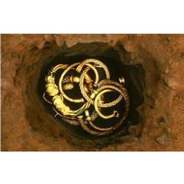

|
Exhibitions
Buried
treasure: finding our past
21
November 2003 - 14 March 2004
Room 35, Great Court
Sponsored by Anglo American and Tarmac
Admission charge
The first
major national exhibition of British archaeology in over 20
years, Buried Treasure: Finding Our Past will show how much
chance archaeological discoveries have revolutionised our understanding
of our past. The exhibition is a result of a unique collaboration
between The British Museum and four other major UK museums in
Cardiff, Manchester, Newcastle and Norwich. The exhibition will
travel to each venue after London to allow people across England
and Wales to view some of the most spectacular finds of British
history.
The exhibition
will feature some of the country's most important British treasures
such as the magnificent Mildenhall tableware, which will be
shown in its entirety and will tour the country for the first
time and the iconic Lewis Chessmen which featured in the first
Harry Potter movie. But the key aim of the exhibition is to
celebrate the enormous contribution that the public has made
in uncovering history as well as the success of the Treasure
Act and the Portable Antiquities Scheme. The vast majority of
finds in the exhibition have been uncovered by metal detectorists
who now account for 90% of all treasure discoveries. Recent
finds such as the Iron Age gold jewellery found in Winchester
and the stunning Bronze Age gold cup from Ringlemere, Kent have
revealed important new information about Britain's prehistory.
Responsible metal detecting and reporting of finds has greatly
enhanced our historical knowledge. It has enabled archaeologists
to examine the context of finds as well as the finds themselves
helping us to understand how they were used, their ritual or
social significance and why they came to be at a particular
site.
The exhibition
also aims to challenge people's perceptions of what constitutes
'treasure'. Although many of the objects in the exhibition are
exquisite examples of gold or silverwork or feature precious
gems, the seemingly lowliest object can be hugely significant
to understanding our history. Medieval pewter 'toys' found on
the banks of the Thames by the 'Society of Thames Mudlarks',
an amateur metal detecting group, have little financial value
but are important social documents and tell us a huge amount
about everyday lives in the Middle Ages. Tudor dress fasteners,
which tend to be found as casual losses, rather than on specific
sites, give us an insight into how people at the time wore their
clothes and what they considered to be fashionable accessories.
On completion
at The British Museum, the exhibition will travel to the National
Museum's and Galleries of Wales, Cardiff (May-September 2004),
The Manchester Museum (October 2004-January 2005), Hancock Museum,
Newcastle ( March-June 2005 ) and Norwich Castle Museum (July
2005-November 2005).
|

A hoard of
Iron Age torcs from Snettisham, Norfolk.
|